Dove
Brand film / student work
Author course · Creative AI · Art direction · Production
Авторская образовательная система о том, как превращать нейросети из набора эффектов в полноценный инструмент креатора, арт-директора и продакшн-команды.
Методика
Студенты не просто изучают сервисы, а учатся декомпозировать задачу, находить инсайт, формировать идею, собирать визуальный язык и доводить результат до законченного ролика или кейса.
В центре — авторская связка: исследование, сценарий, key visual, раскадровка, генерация, арт-дирекшн, монтаж, звук и презентация проекта.
STUDENT CASES / AI&SENSE
Финальные проекты показывают, как студенты проходят путь от исследования и идеи до визуальной системы, продукта, раскадровки и готового AI-фильма. В группе были не только дизайнеры и креаторы — для многих это стало первым полноценным опытом работы с AI.
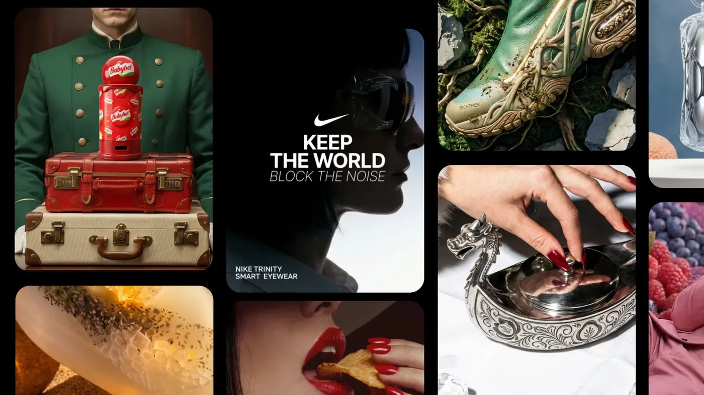
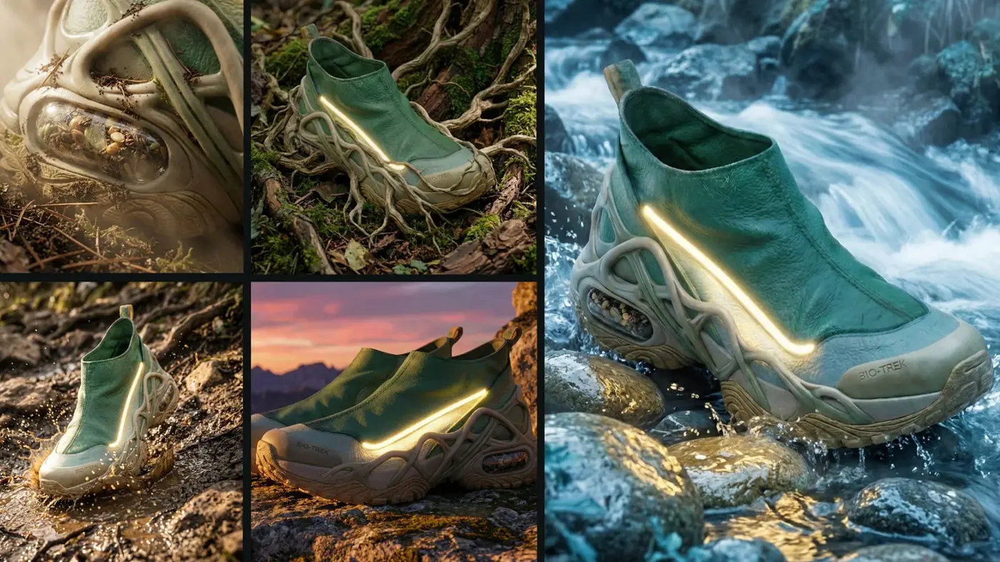
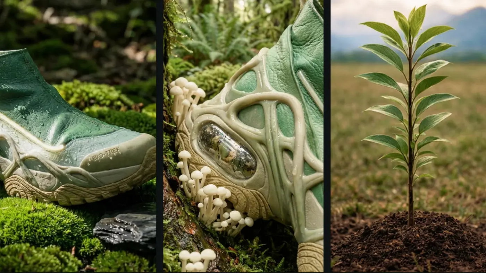
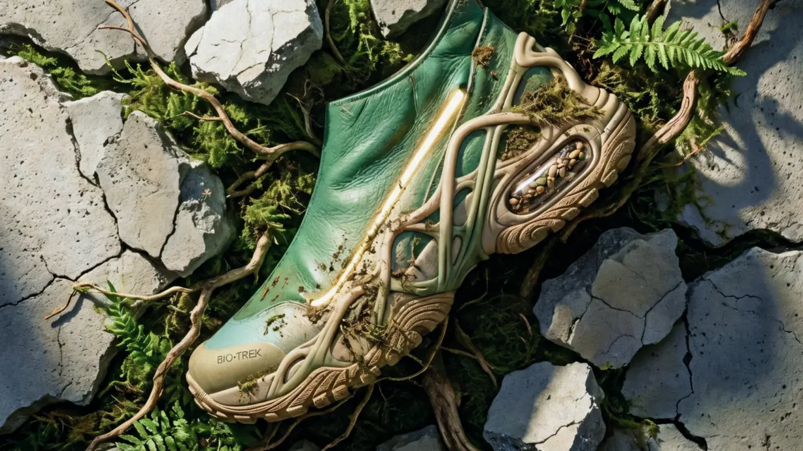
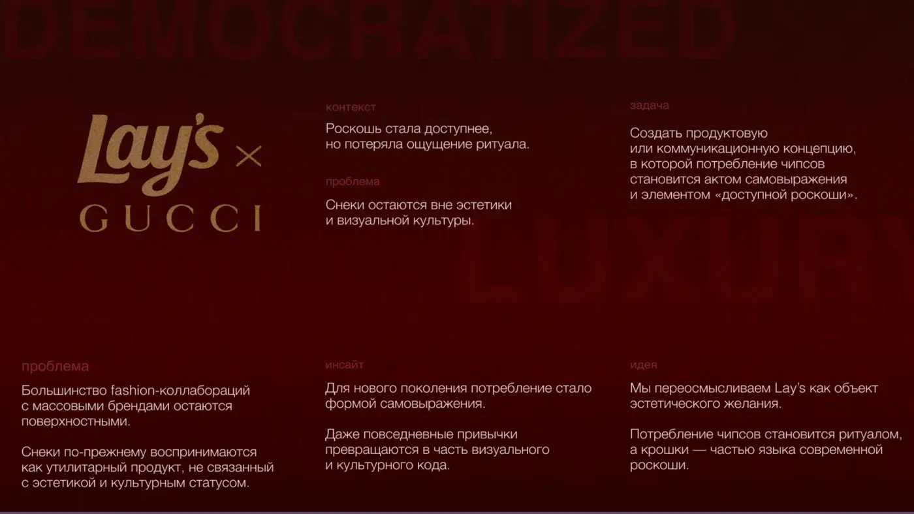
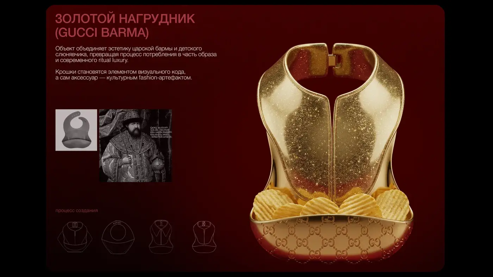
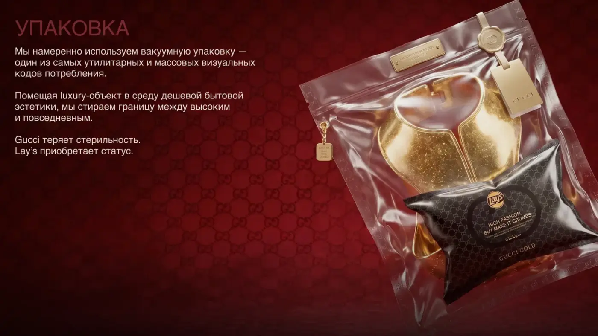
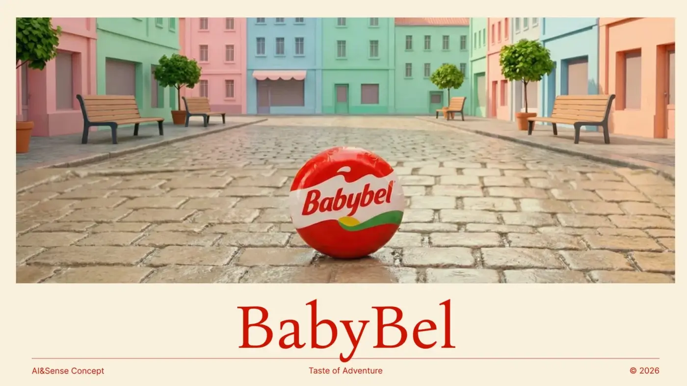
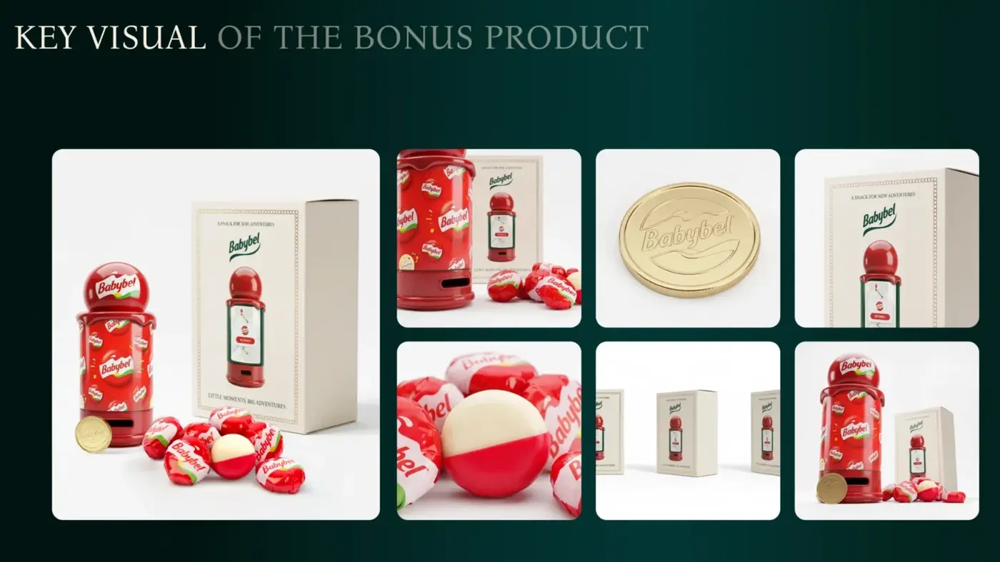
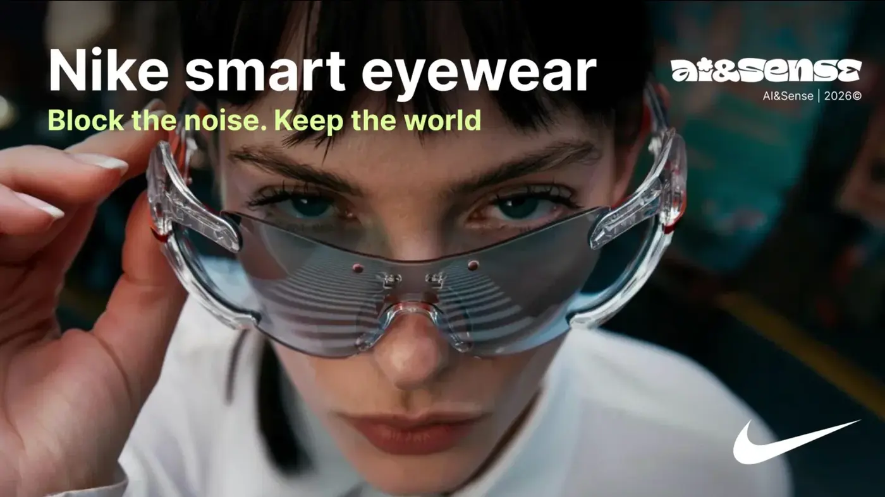
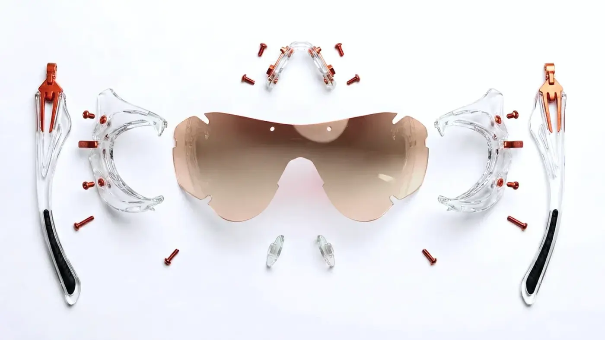
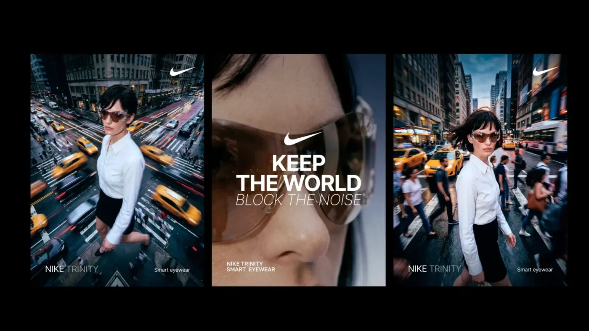
Семь финальных роликов показывают разные подходы студентов к брендовому сторителлингу, визуальному языку, монтажу и AI-продакшну.
Brand film / student work
Product concept / student work
Beauty / AI film
Social idea / AI film
Product film / student work
Fashion collaboration concept
Vertical AI film / student work